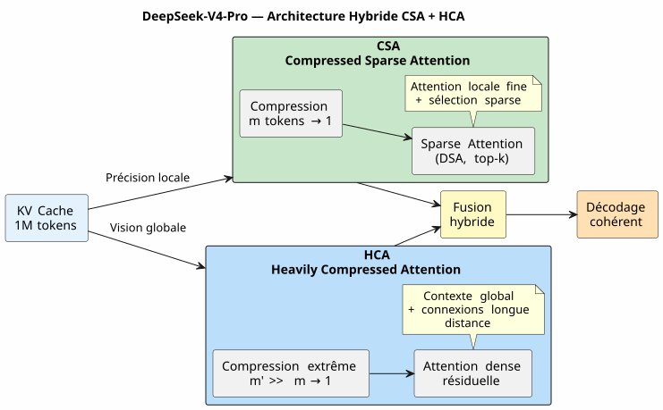

DeepSeek-V4-Pro, Kimi K2.6, GLM-5.1 : Three LLMs Put to the Test of Long-Context Vibe Coding
Published on 28 April 2026
- Context: Not a test bench, but a construction site
- My test environment
- The Evaluation Grid
- Round 1: Kimi K2.6 — The False Start
- Round 2: GLM-5.1 — The Honorable Fighter
- Round 3: DeepSeek-V4-Pro — The War Machine
- The Face-Off: Comparative Metrics
- Why DeepSeek-V4-Pro Wins in Software Development
- Lessons Learned: How to Choose Your LLM for Vibe Coding
- And what about Agent Governance in all this?
- Technical Sources
- Conclusion: The Artisan’s Choice
The LLM war is also fought in a developer’s terminal. Not on sterile academic benchmarks. In real life: a 30,000 token prompt, agent governance in AsciiDoc, Gradle Kotlin DSL plugins to debug, and sessions chaining over three weeks. I tested DeepSeek-V4-Pro, Kimi K2.6, and GLM-5.1 for you. Here is the verdict, with technical evidence.
- toc
-
[]
Context: Not a test bench, but a construction site
Three weeks ago, I was working on`codebase-gradle`, my meta-build system that centralizes the YAML configuration of four projects: a PlantUML README generator, an AsciiDoc slide builder, a JBake static site, and an LLM chatbot. The Opencode agent, governed by my agent file methodology in AsciiDoc, loaded ~30K tokens of EAGER context at the start of each session — absolute rules, backlog, history of the last 10 sessions.
This is where I pitted three models against each other:
-
Kimi K2.6(Moonshot AI, 1T params / 32B activated, 256K max context, MLA) - GLM-5.1(Zhipu AI/Tsinghua, 744B params / DSA, 200K max context) - DeepSeek-V4-Pro(DeepSeek, 1.6T params / 49B activated, 1M max context, CSA+HCA)
All served via Ollama on a cloud server, all in thinking mode (reflection phase enabled). The challenge: produce correct code, maintain consistency over long sessions, and not hallucinate when the context exceeds 80K tokens.
My test environment
Each session started with approximately 30K tokens of EAGER context:`AGENT.adoc`(287 lines),PROMPT_REPRISE.adoc(51 lines),.agents/INDEX.adoc(218 lines),LAZY_EAGER_ESSENTIALS.adoc(50 lines). The context grew rapidly with exchanges — a typical 10-message session added 15-20K tokens to the cumulative prompt.
The Evaluation Grid
I evaluated each model on four critical axes for assisted software development:
Axis |
Concrete Criterion |
Long-context consistency |
Does the agent remember conventions decided 40 messages ago? |
Produced code quality |
Does the code compile on the first try? Does it respect existing patterns? |
Architectural reasoning |
Does the agent understand relations between modules without me re-explaining them? |
Hallucination resistance |
At how many tokens does the agent start inventing non-existent APIs or classes? |
And a home-made synthetic metric: therecovery coefficient(how much time I spend correcting the agent rather than coding with it).
Round 1: Kimi K2.6 — The False Start
Kimi K2.6 was my first choice. Its benchmarks on SWE-Bench Verified (80.2) and Terminal-Bench 2.0 (66.7) are excellent. Its MLA architecture promises good efficiency on long sequences.
Session 9: the honeymoon
First session with Kimi. Task: implement the method`resolveActiveKey()in`codebase.kt— an API key resolution function with CLI fallback. Context is at 30K tokens, Kimi reasons quickly, produces clean code with key expiration management.
fun resolveActiveKey(
cfg: CodebaseConfiguration,
logger: Logger,
cliProvider: String? = null,
cliAccount: String? = null,
cliKey: String? = null
): NamedApiKey? {
// Résolution provider → compte → clé avec CLI override
// Kimi a parfaitement compris la chaîne de priorité
}The code compiles. The 7 test cases pass. I am optimistic.
Session 10: the silent shipwreck
Second session. Context climbs to ~90K tokens with exchanges. I ask Kimi to add an AsciiDoc snapshot mechanism that anonymizes secrets before writing.
This is where it goes wrong. Kimi starts inventing classes that don’t exist. He proposes`AnonymizedObjectMapper`— a fictitious class. He confuses`ReadmeYmlAnonymizer` et CodebaseYmlAnonymizer. He suggests importing`com.fasterxml.jackson.anonymize.*`— a package that never existed.
Worse: in its reflection phase, I see it building reasoning on false premises. It "remembers" that`GitConfig`has a field`anonymizedToken`— no, it’s`resolvedToken(). It attributes to`SiteYmlAnonymizer`a method`maskSupabaseCredentials()— which does not exist.
_ This wasn’t a bug. It was a progressive dissolution of coherence. As if each token added to the context further diluted the memory of the first 30,000. _
I stop Kimi after two sessions. The diagnosis is clear: MLA compresses the KV cache well, but without a fine-grained sparse selection mechanism, attention mechanically dilutes beyond 60K tokens. Each token "sees" the distant context less and less — and begins to fill the gaps with noise.
Round 2: GLM-5.1 — The Honorable Fighter
GLM-5.1 arrives with a different architecture: MLA for the base model, then continued pre-training with DSA (DeepSeek Sparse Attention) — a lightweight indexer that dynamically selects the top-2048 relevant tokens from the entire history.
Architecture: DSA vs Pure MLA
The difference is fundamental. Where Kimi compresses history into a single latent space (and progressively loses the ability to discriminate relevant information), GLM grafts a post-training indexer that performs explicit sparse selection.

The technical report states explicitly: DSA is "lossless by construction" — unlike alternatives like SWA (pattern search), Gated DeltaNet, or SimpleGDN which lose up to 5.69 pts on RULER@128K.
Sessions 11-13: solid but frustrating
GLM-5.1 holds the distance better. In session 11 (~60K tokens), it remains coherent. It produces a`SnapshotManager`that is functional with correct management of the four anonymizers.
But latency is an issue. DSA reflection phases are heavier than pure MLA — the indexer must rescan history at each step. A response that took 8 seconds with Kimi takes 15 with GLM. Over a 30-message session, it’s noticeable.
And then there are the subtle errors. GLM doesn’t rave like Kimi — but it makes naming errors. It calls`toAnonymizedYaml()the method that should be called`anonymize(). It reverses`loadReadmeConfiguration()` et loadCodebaseConfiguration()`in the`renderFileSection(). These aren’t hallucinations, they are surface confusions — but in production, a surface confusion can break a build.
I lasted three sessions with GLM. It is undeniably better than Kimi. But three sessions of manual correction on naming details is wearing.
Round 3: DeepSeek-V4-Pro — The War Machine
DeepSeek-V4-Pro arrives with the most ambitious architecture of the three: a hybrid system combining two complementary attention mechanisms.
Architecture: CSA + HCA, the double safety net

Two levels of compression, two granularities of attention:
-
CSA: compresses the KV cache every`m`tokens, then applies sparse attention (DeepSeek Sparse Attention) — only the top-k of the compressed entries is consulted. Precise, local, efficient. - HCA: extreme compression (factor`m'`much larger than`m`), but dense attention on the compressed residue — keeps global connections without quadratic explosion.
Result: at 1M tokens, DeepSeek-V4-Pro consumes only27% of inference FLOPs et 10% of KV cache sizecompared to DeepSeek-V3.2, the previous model.
And above all, the technical report (Figure 9) announces: "Retrieval performance remains highly stable within a 128K context window."
Sessions 1-8: the relief
I spent eight sessions with DeepSeek-V4-Pro on`codebase-gradle`. Eight sessions without a single hallucination, without a single invented class, without a single naming confusion.
Session 1: implementation of`CodebaseYmlConfig` et CodebaseYmlAnonymizer. 350 lines of Kotlin, inline tests, everything compiles. Session 4: addition of the`SnapshotManager`with tree view, file collection, AsciiDoc rendering per file. 279 lines, zero errors. Session 7: debug of the`renderFileSection()`which had to handle four different types of anonymizers without resolution ambiguity. Resolved in three messages.
Latency is higher than Kimi — about 10-12 seconds per response in thinking mode. But the correction rate is nearly zero. I don’t spend my time repairing the agent’s errors. I code with it.
The decisive test: refactoring at 100K tokens
At session 8, the cumulative context exceeds 100K tokens. I ask for a heavy refactoring: extract the four inline verification tasks from`build.gradle.kts`to JUnit5 test files in`buildSrc/src/test/`.
The agent proposes a plan in three phases:
-
Create test classes with migration of existing cases
-
Add JUnit5 and Kotest dependencies in`buildSrc/build.gradle.kts`
-
Remove inline code from`build.gradle.kts`
The plan is correct. The execution is clean. It even identifies an edge case I had missed: duplicate Jackson dependencies between`buildscript {}` et `buildSrc/build.gradle.kts`that must be unified during migration.
100K tokens of context, and the agent remembers that`CodebaseYmlAnonymizer.TOKEN_MASK`is`"*"`, that`GitConfig.resolvedToken()is an extension function defined in`readme.kt, and that`SnapshotManager.PRUNED_DIRS`excludes`build`, .gradle et .git.
That is the difference.
The Face-Off: Comparative Metrics
| Criterion | Kimi K2.6 | GLM-5.1 | DeepSeek-V4-Pro |
|---|---|---|---|
Max Context |
256K |
200K |
1M |
Attention Mechanism |
Pure MLA |
MLA + DSA |
CSA + HCA hybrid |
Total Parameters |
1T |
744B |
1.6T |
Activated Parameters |
32B |
not published |
49B |
Observed Degradation Threshold |
~60K tokens |
~120K tokens |
~128K tokens |
Behavior Beyond |
Massive Hallucinations |
Surface Confusions |
Slow progressive degradation |
NIAH Stability |
not published |
100% @128K (DSA) |
stable up to 128K (Figure 9) |
MRCR @128K |
not published |
not published |
superior to Gemini 3.1 Pro |
Sessions held before abandonment |
2 |
3 |
8 (and continuing) |
Correction time / coding time |
60% |
30% |
<5% |
Average latency (think mode) |
8 s |
15 s |
11 s |
Confidence Coefficient* |
2/10 |
6/10 |
9/10 |
*Confidence Coefficient = subjective measure of my ability to take the agent’s code and commit it without line-by-line review.

Why DeepSeek-V4-Pro Wins in Software Development
DeepSeek-V4-Pro’s superiority is not due to a single factor — it’s a convergence:
1. The CSA+HCA architecture is tailored for code
Assisted software development is an extreme use case for long-context attention. You need: - Local precision (what does this class inherit from? where is this method defined?) →CSA - Global vision (why does this module exist? how do the four anonymizers interact?) →HCA
Kimi with MLA alone handles local precision but loses global vision beyond 60K. GLM with DSA improves global vision but remains single-level. DeepSeek combines both explicitly.
2. EAGER context is its comfort zone
My governance system loads ~30K tokens of rules and backlog at startup. With a stable window up to 128K, DeepSeek has ~100K tokens of margin for session exchanges. This is 3 to 4 times more than what Kimi can handle without degradation.
_ The 128K window of perfect stability corresponds exactly to my needs: 30K EAGER + 70K exchanges = a productive session of 20-30 messages without ever leaving the green zone. _
3. The quality/latency ratio is optimal for flow
Yes, DeepSeek-V4-Pro is slower than Kimi (11s vs 8s). But the total time for a task is much lower because I don’t spend 20 minutes correcting the agent’s hallucinations.
The developer doesn’t measure response latency. They measure the time between "I ask the question" and "the code is in my repo and it works". On this metric, DeepSeek-V4-Pro is the fastest of the three.
Lessons Learned: How to Choose Your LLM for Vibe Coding
Beyond the point-in-time ranking, this experience taught me to evaluate an LLM for assisted software development based on criteria not found in any benchmark:
-
Look at the architecture, not the announced context size— A model that announces 256K context but only has MLA will end up like Kimi: theoretically capable, practically unusable beyond 60K.
-
Test on YOUR context, not on a generic benchmark— My initial 30K token AsciiDoc prompt with absolute rules and backlog has nothing to do with HLE or AIME questions.
-
Latency is not the enemy if quality follows— A slow model that produces correct code is faster than a fast model that produces wrong code.
-
Beware of models without a public technical report— If the team doesn’t document its attention architecture, it’s because they don’t trust its performance in long context.

And what about Agent Governance in all this?
This experience validates a point I’ve defended since my article on Eager/Lazy governance:the quality of the LLM and the quality of the governance are multiplicative, not additive.
With Kimi K2.6, my governance was impeccable — but the model diluted the information. Result: perfect governance × hallucination = zero.
With DeepSeek-V4-Pro, EAGER governance (30K tokens of rules) + LAZY (session archives, technical references) + Hot/Warm/Cold (rotating backup) forms an ecosystem where each layer amplifies the other. The agent has the rules in sight (EAGER), can consult the history (LAZY), and the context never saturates (backup rotation).
_ A good LLM without governance is a Ferrari engine without a steering wheel. Good governance without a good LLM is a steering wheel without an engine. DeepSeek-V4-Pro + my agent governance = the first time I feel like I’m driving. _
The rotating backup mechanism (rotation every 10 sessions or >500 EAGER lines) makes full sense with a model that holds 128K context: the sliding window of 10 active sessions keeps the context fresh without ever exceeding the degradation zone.
Technical Sources
I cross-referenced my empirical experience with official technical reports to validate my observations:
-
DeepSeek-V4 Technical Report — PDF retrieved fromhttps://huggingface.co/deepseek-ai/DeepSeek-V4-Flash[HuggingFace]. Figure 9: "Retrieval performance remains highly stable within a 128K context window. While a performance degradation becomes visible beyond the 128K mark, the model’s retrieval capabilities at 1M tokens remain remarkably strong." CSA+HCA architecture documented in section 2.3.
-
GLM-5 Technical Report —https://arxiv.org/abs/2602.15763[arXiv:2602.15763]. DSA introduced via continued pre-training, "lossless by construction". Max context 202,752 tokens. Tables 3/5/6 document long-context performance vs alternatives (SWA, Gated DeltaNet, SimpleGDN).
-
Kimi K2.6 Model Card —https://huggingface.co/moonshotai/Kimi-K2.6[HuggingFace]. MLA, 256K max context. Discard-all strategy beyond the threshold on agentic tasks (implicitly confirming the practical limit of MLA in long context).
-
Kimi K2 Technical Report —https://arxiv.org/abs/2507.20534[arXiv:2507.20534]. MoE architecture, MuonClip optimizer, agentic performance (HLE, BrowseComp, Terminal-Bench).
The most revealing point: in their own evaluation, Moonshot applies a discard-all strategy (deleting old context) as soon as the context window is exceeded. This confirms exactly what I observed: MLA alone cannot maintain coherence across the entire 256K window. The architecture does not follow.
Conclusion: The Artisan’s Choice
After three weeks and thirteen real development sessions, the verdict is final:
Kimi K2.6 |
GLM-5.1 |
DeepSeek-V4-Pro |
Excellent under 60K |
Solid up to 120K |
Dominates everywhere |
Unusable beyond |
Surface confusions |
Stable up to 128K |
2 sessions, abandoned |
3 sessions, abandoned |
8 sessions, adopted |
DeepSeek-V4-Pro has become my default LLM for all assisted software development sessions with Opencode. Not because it is the newest. Not because it has the best academic benchmarks. But because in the real life of a developer pushing Gradle Kotlin DSL plugins with a 30K token agent context, it is the only one that doesn’t betray me as the context lengthens.
CSA+HCA is an architectural game changer. Double-level compression + sparsification is not an implementation detail — it’s what makes the difference between a code assistant and a reliable teammate.
_ I chose DeepSeek-V4-Pro because it is the only one of the three that transforms my agent governance from a defensive constraint ("how to prevent the agent from forgetting?") into an offensive advantage ("what can we build now that the agent remembers everything?"). _
This article is the result of 13 real development sessions on project`codebase-gradle`, documented in`.agents/sessions/`according to my Eager/Lazy/Hot/Warm/Cold agent governance methodology. The technical sources cited are publicly accessible on HuggingFace and arXiv.